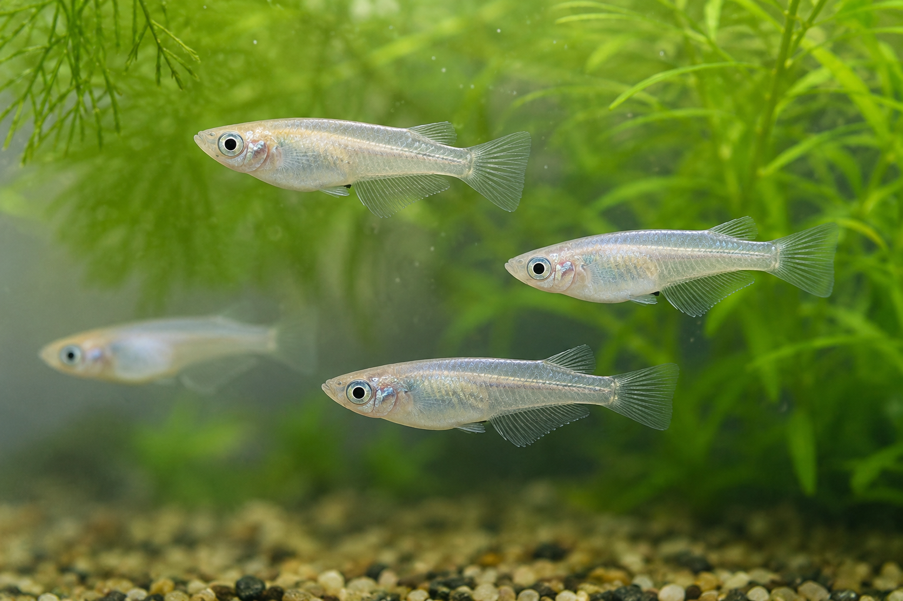

<a href="https://1drv.ms/i/c/662d6e8a150c494e/IQAbU0zK2HtjS7iGGiBY8ZrWAbrALBRK6Emu4NLxbz2obSg?e=b05PUN">medaka</a> © 2026 by <a href="https://taisein04-coder.github.io/literacy/cc.html">iida taisei</a> is licensed under <a href="https://creativecommons.org/licenses/by/4.0/">CC BY 4.0</a>
